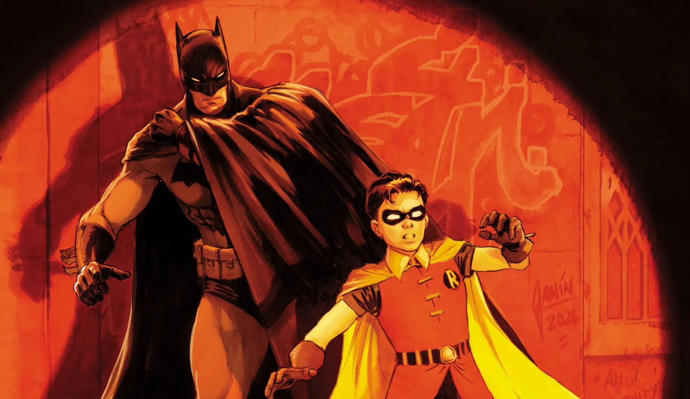
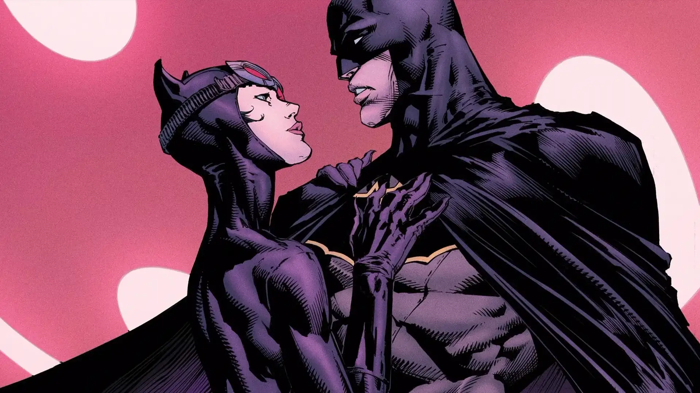
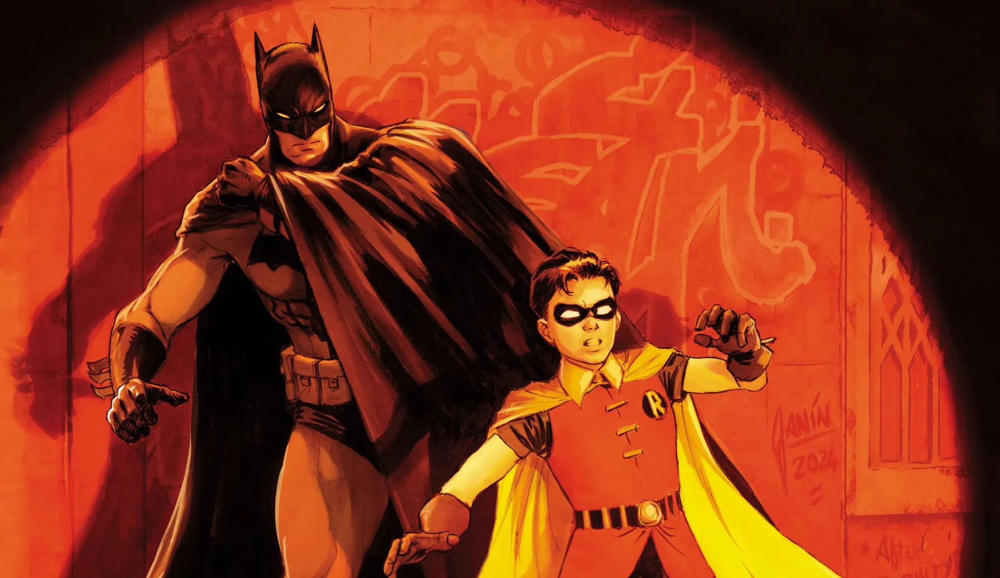
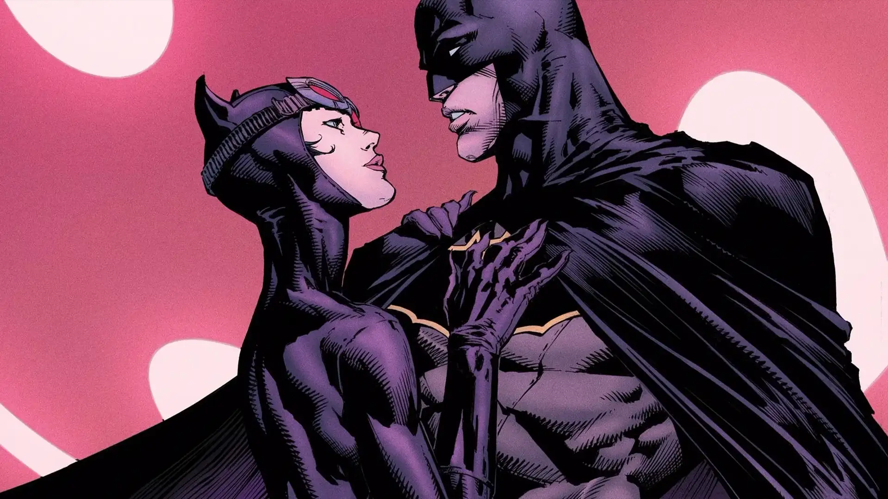

Quem é o batman?
Batman (Bruce Wayne) é um personagem da DC comics e atua como justiceiro (sem ninguém ter pedido isso a ele) de Gotham. Ele não tem superpoderes: sua força esta em treinamento, tecnologia e riquesas (muitas riqueza)
Em várias histórias, Gotham representa problemas sociais: desigualdade, corrupção e violência urbana. Alguns quadrinhos usam o Batman como forma de crítica social, mostrando como falhas nas intituições, interesses econômicos e autoritarismo afetam principalmente quem tem menos direitos e oportunidade.
Galeria
 


